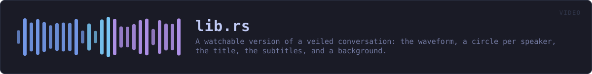

crates/veilvoice-video/src/lib.rs
veilvoice-video · 140 lines · read the source here · or on GitHub
A watchable version of a veiled conversation: the waveform, a circle per speaker, the title, the subtitles, and a background.
What this produces, and what needs something else
A self-contained page, always. page::player writes one HTML file that plays the veiled audio, draws its waveform, lights each speaker's circle as they talk and shows the subtitles. It needs nothing installed, it contacts nothing, it opens in any browser on any device, and it is what this crate is for.
A video file, only if ffmpeg is there. Turning a few thousand frames into an .mp4 needs a codec, and this project ships none: writing an H.264 encoder is not a sensible thing for a voice de-identifier to do, and pulling one in would put a large C dependency into a graph whose emptiness is a front-page claim. So ffmpeg finds the tool if the machine has it and prepares the exact command; if the machine does not, the page is still there and nothing has failed.
VeilVoice never downloads or runs ffmpeg on your behalf, exactly as it never installs any other companion.
The page needs a little JavaScript, and says so
Lighting the right circle means knowing where the audio has got to, and only the audio element knows that. There is a small inline script, with no file, no network and no library, and a <noscript> that says what it does. Without it the audio still plays, the subtitles still appear and the waveform is still drawn; the circles simply do not light up.
A picture is not veiled
A speaker may have a portrait, and it is drawn exactly as supplied. Nothing here anonymises an image: a photograph of somebody's face beside their veiled voice identifies them completely. The default is a plain filled circle for that reason, and SCOPE says it where a user will read it.
In plain words
This draws the picture.
A waveform, a circle for each person in their own colour with their name under it, a title, and a page that plays all of it together in a browser and needs nothing installed.
It does not make a video file. That needs an encoder, and this project ships none -- so it prints the command that would do it with ffmpeg, if you have ffmpeg, and leaves running it to you.
WHAT THIS FILE CONTAINS
140 lines defining 3 functions (0 public), 1 type and 2 constants. Everything below is read out of the source, so it cannot disagree with the code.
The types it owns.
enum Errorline 79 — Everything that can go wrong in this crate.
WHAT CALLS WHAT
The functions this file defines, and the calls between them. An edge means the callee's name appears, called, inside the caller's body — a syntactic reading, not a type-resolved one.
The same graph as Mermaid source
%%{init: {"theme":"base","themeVariables":{"background":"#1a1b26","primaryColor":"#1f2335","primaryTextColor":"#c0caf5","primaryBorderColor":"#7aa2f7","secondaryColor":"#16161e","tertiaryColor":"#16161e","lineColor":"#737aa2","textColor":"#c0caf5","mainBkg":"#1f2335","nodeBorder":"#7aa2f7","clusterBkg":"#16161e","clusterBorder":"#2f3549","fontFamily":"ui-monospace, SFMono-Regular, Consolas, monospace","fontSize":"14px"}}}%%
flowchart TD
n_from["Error::from<br/>line 87"]
n_fmt["Error::fmt<br/>line 93"]
n_source["Error::source<br/>line 102"]
click n_from href "https://github.com/tilas01/veilvoice/blob/main/crates/veilvoice-video/src/lib.rs#L87" "open the source"
click n_fmt href "https://github.com/tilas01/veilvoice/blob/main/crates/veilvoice-video/src/lib.rs#L93" "open the source"
click n_source href "https://github.com/tilas01/veilvoice/blob/main/crates/veilvoice-video/src/lib.rs#L102" "open the source"
classDef helper fill:#1f2335,stroke:#bb9af7,color:#c0caf5
class n_from,n_fmt,n_source helperThis site loads no third-party script, so it cannot run Mermaid; the diagram above is the same nodes and edges drawn by the generator instead. GitHub renders the source below directly.
ITEMS
| Item | Line | Documentation |
|---|---|---|
VERSION pub const | 61 | Crate version string, surfaced in the About panel. |
SCOPE pub const | 67 | What a rendered video is worth, in the words a front end should show. |
Error pub enum | 79 | Everything that can go wrong in this crate. |
Error::from fn | 87 | |
Error::fmt fn | 93 | |
Error::source fn | 102 |